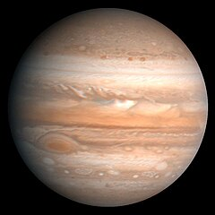
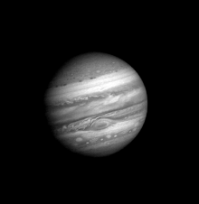

.مُشتَری[۱۰] یا هُرمُز[۱۱](که به نامهای بِرجیس، اورمزد، زاوش، ژوپیتر نیز شناخته میشود)، بزرگترین سیاره در منظومهٔ شمسی است. این سیارهٔ غول گازی با جرم یکهزارم خورشید است، ولی جرمی دو و نیم برابر تمامی دیگر سیارههای منظومهٔ شمسی دارد و دومین جسم در منظومهٔ شمسی بر پایهٔ جرم و حجم است. از نظر دوری از خورشید، مشتری پنجمین سیاره پس از تیر، ناهید، زمین و بهرام است.این سیاره یک سیاره گازی است که از هیدروژن و هلیم تشکیل شده است و هیچ سطح جامدی ندارد. مشتری دارای چندین حلقه و بیش از صد قمر است
در یک نگاه کوتاه، مشتری(هُرمُز) چهارمین جسم درخشان در آسمان پس از خورشید، ماه و زهره است. اگرچه گهگاه مریخ (بهرام) درخشانتر بهنظر میآید. به کمک دوربین دوچشمی برخی از قمرهای مشتری نیز قابل دیدن میباشند. جرم مشتری ۲٫۵ بار از مجموع جرم دیگر سیارههای منظومهٔ شمسی بیشتر است. جرم مشتری ۳۱۸ بار بیشتر از جرم زمین است. قطر آن ۱۱ برابر قطر زمین است. مشتری میتواند ۱٬۳۰۰ زمین را در خود جای دهد. میانگین دوری آن از خورشید در حدود ۷۷۸ میلیون و ۵۰۰ هزار کیلومتر است یعنی بیشتر از ۵ برابر دوری زمین از خورشید. ستارهشناسان با تلسکوپهای برپاشده در زمین و ماهوارههایی که در مدار زمین میگردند به بررسی مشتری میپردازند. ایالات متحده تا کنون ۶ فضاپیمای بدون سرنشین را به مشتری فرستادهاست. در ژوئیهٔ ۱۹۹۴، هنگامی که ۲۱ تکه از دنبالهدار شومیکر-لوی ۹ با هواکرهٔ مشتری برخورد کرد، ستارهشناسان شاهد رویدادی بسیار تماشایی بودند. این برخورد برانگیزاننده انفجارهای سهمناکی شد که پارهای از آنها قطری بزرگتر از قطر زمین داشتند.
 مشتری، گوی غولپیکری آمیخته از گاز و مایع است و گمان میرود مقداری سطح جامد هم داشته باشد. بین ۸۸ تا ۹۲ درصد این غول سیاره از عنصر هیدروژن و ۸ تا ۱۲ درصد آن از هلیوم تشکیل شدهاست. قطر مشتری در ناحیهٔ استوا ۱۴۲٬۹۸۴ کیلومتر است و بر اساس نظریههای ارائه شده این بالاترین طول قطری است که یک سیارهٔ گازی میتواند داشته باشد. از این پس، ورود جرم بیشتر این غول سیاره را کوچکتر، و فشردهتر میکند. بنابر اصل ناپایداری کلوین–هلمهولتز هماکنون سالانه حدود ۲ سانتیمتر از قطر مشتری کاسته میشود. سطح سیاره از ابرهای ستبر زرد، قرمز، قهوهای و سفید رنگ پوشیده شدهاست. بخشهای روشنتر «ناحیه» و بخشهای تاریکتر «کمربند» نامیده میشوند. کمربندها و ناحیهها به موازات استوای سیاره قرار دارند. مشتری همچنین گرانش بسیار نیرومندی دارد. در سطح سیاره نسبت جرمی هیدروژن و هلیم نزدیک به ۷۱ و ۲۴ درصد و ۵ درصد دیگر مواد است. در ماه مهٔ ۲۰۱۷ دانشمندان مسئول مأموریت فضاپیمای جونو در سازمان ملی هوانوردی و فضایی آمریکا (ناسا) اعلام کردند که توفندهای بزرگی را در قطبهای مشتری مشاهده کردهاند. این توفندها مانند توفندهای استوایی بوده و هر کدام با اندازهای نزدیک به زمین، همگی همزمان در کنار هم دیده میشوند. این موضوع باعث به چالش کشیده شدن همهٔ فرضیههای مورد علاقهٔ سیارهشناسان در مورد چگونگی کارکرد مشتری میشود.[۱۴]
صفحه بعد صفحه قبل